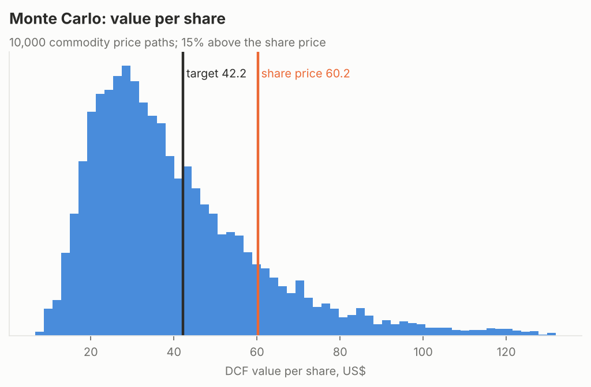
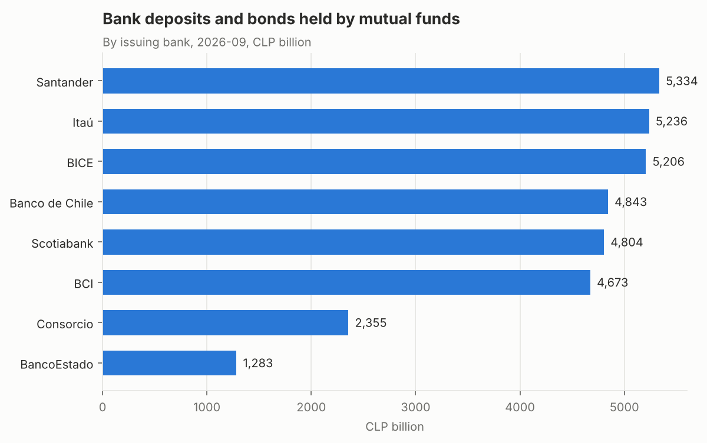
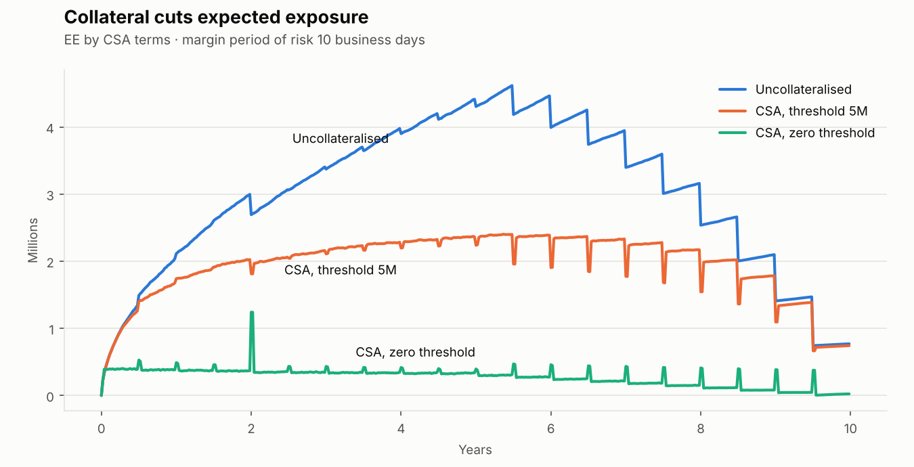
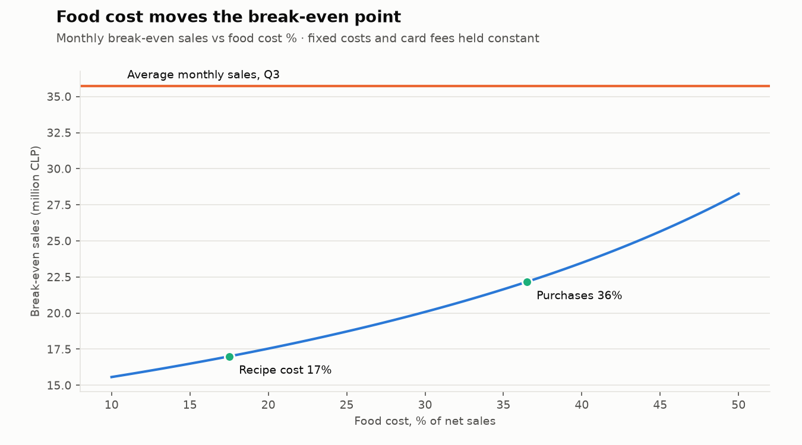

Ignacio Mendoza Rojas
Financial Risk & Modelling Analyst at Banco Ripley, based in Barcelona
I build the models behind counterparty and liquidity risk at a bank: potential future exposure for derivatives, deposit decay, CVA/DVA and Basel III liquidity projections. Before that I evaluated investments for a group of private clinics, and I won the CFA Institute Research Challenge for South America in 2021.
This page collects work I've done on my own time with real public data. Each section starts with what the analysis found, then links to the code.
At US$60, SQM's share price assumes lithium at about US$25,000 a tonne for the long run. My valuation, at US$15,000, gives US$42.
A segment-by-segment valuation of the Chilean lithium and iodine producer from its public filings, with the Corfo lease, the Codelco agreement and 10,000 simulated commodity price paths. Only 15% of the paths value the shares above today's price.
It revisits the company my team covered in the CFA Research Challenge. The October 2020 valuation is kept and held against what happened next: the lithium spike went mostly to the state and to capex.

equity-research-engine Read the October 2026 report The 2020 valuation, backtested Code
Chilean mutual funds lend CLP 38.5 trillion to banks, and six banks take 78% of it.
What every Chilean mutual fund held each month from 2019 to 2026, from 3.3 million holdings filed with the regulator. Bank deposits and bonds are half of the industry's assets, and more than half of the fixed income matures within a year. For a bank's liquidity team, that is short-term funding that can leave quickly.
In 2021-22 the money left the banks for Central Bank paper, during the pension withdrawals and the first rate hikes. Deposits only got back to their 2019 level in 2024.

chile-mutual-funds-analytics Findings and code
A zero-threshold collateral agreement cuts this portfolio's peak exposure from 19 million to 5.7 million.
A Monte Carlo engine for derivatives counterparty risk: Hull-White rates and FX simulation, netting and collateral, expected exposure, PFE, Basel EEPE, and CVA/DVA. Every pricing component is checked against a closed-form result. On the example netting set, netting alone cuts CVA by 26%.

counterparty-credit-risk Method, validation and code
The recipes said food cost was 17% of sales. The purchases said 36%.
Menu engineering, yield-adjusted ingredient usage and break-even on the real operating data of a restaurant I ran in 2023. The gap between recipe cost and actual spending is waste, portioning and price drift, and it moves break-even sales up by 30%.

restaurant-analytics Analysis and code
Data tools
- cmf-ffmm-etl
Monthly pipeline that scrapes the holdings of every Chilean mutual fund from the regulator's portal, which has no API, runs quality checks and loads them into any SQL database. - db-migration-validator
Proves a database migration lost nothing: structure, row counts, content fingerprints and permissions, across Oracle, SQL Server, PostgreSQL and MySQL.
Experience and education
| 2023 – present | Financial Risk & Modelling Analyst, Banco Ripley, Chile |
| 2023 | Strategy & Investment Analyst, Red Interclínica, Chile |
| 2021 – 2023 | Financial Risk Analyst, Banco Ripley, Chile |
| 2025 – 2027 | MSc in Business Research, Universitat de Barcelona |
| 2020 – 2021 | MSc in Finance, Universidad Adolfo Ibáñez |
| 2016 – 2019 | BSc in Business Administration and Economics, Universidad Adolfo Ibáñez |
Winner, CFA Institute Research Challenge, South America Regional Final, 2020–2021.